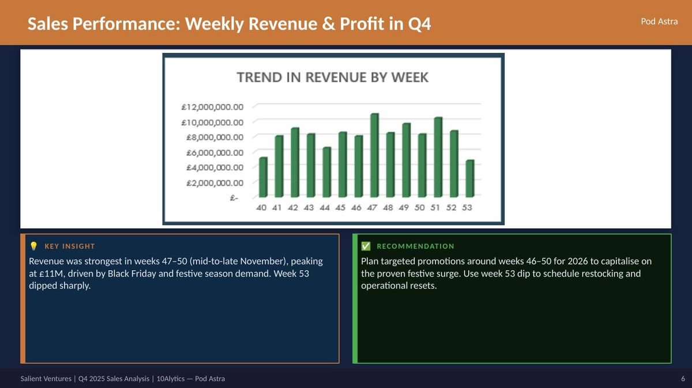
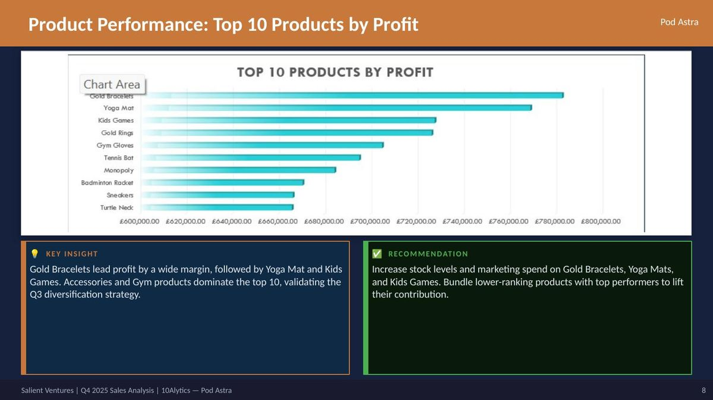
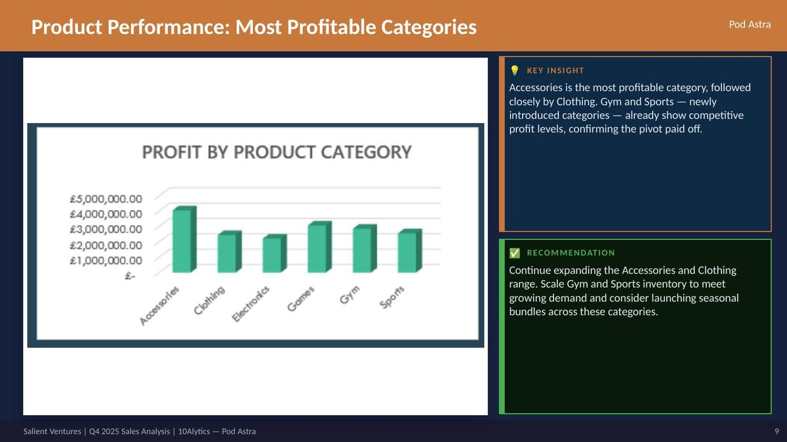
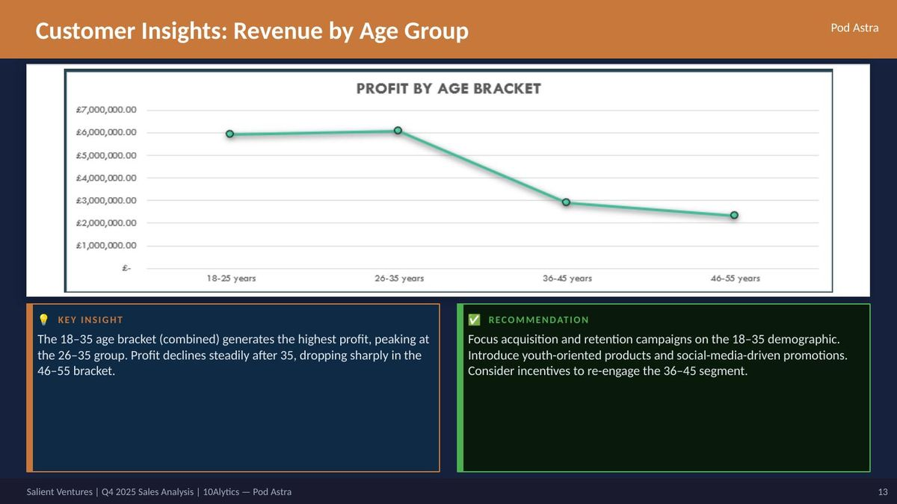
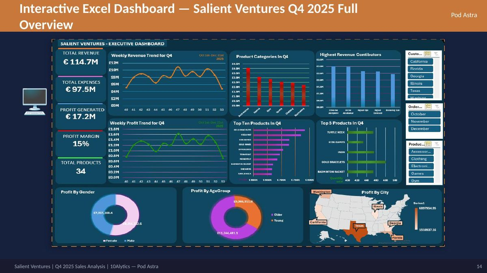

A fast-growing e-commerce retailer, flying without visibility
Salient Ventures is a fast-growing e-commerce company specializing in the sale and distribution of high-quality household and lifestyle products, operating exclusively through digital channels. Headquartered in California, the company serves customers across the western half of the United States, selling across Gym Accessories, Sports, Clothing, Accessories, Electronics, and Toys — a diversified catalogue built to capture the festive Q4 market.
A 20% revenue decline, and no data to explain why
Despite a surge in Q4 transaction volume following a strategic pivot, management couldn't validate the true impact of the recovery plan due to limited data visibility — making it impossible to approve the 2026 budget with confidence. The task: distinguish vanity metrics from sustainable business growth.
Poor inventory management
Leading to stockouts and overstock across the catalogue.
Low customer retention
Limited repeat purchase behaviour across the customer base.
Lack of regional penetration
Sales concentrated in California, with little reach beyond it.
Flat salary structure
No sales performance incentives in place for the team.
Four strategic objectives for the Q4 analysis
Assess sales performance
Calculate and evaluate key metrics — total revenue, expenses, profit, margin, and product mix — for the Q4 2025 period.
Validate the turnaround strategy
Determine whether the surge in Q4 transaction volume represents genuine, sustainable growth or short-term noise.
Uncover product & customer insights
Identify top-performing products, categories, customer segments, and regional contributors to profit.
Aid board decision-making
Provide a dynamic, data-driven dashboard to support evidence-based budget decisions for 2026.
A strong recovery from the Q1–Q3 decline
Q4 generated £114.7M in revenue with a 15% profit margin — total profit reached £17.2M across 34 products.
Prioritise high-margin products and reduce the cost base to push the profit margin beyond 15% in 2026. Monitor expenditure closely against the £97.5M Q4 spend.
Revenue climbed steadily through Q4, peaking around Black Friday
Weekly revenue trend, weeks 40–53 (mid-late November through year-end)

Revenue was up markedly around week 47 (mid-to-late November), peaking as Black Friday and festive-season demand kicked in. Weeks 51–53 dipped slightly.
Texas and Washington are outperforming the home market
Profitability by city — top contributing markets in Q4

Texas and Washington are the top two cities generating profit, significantly outperforming California — the company's home market. Georgia and Florida show weaker contribution.
Gold Bracelets lead by a wide margin
Top 10 products by profit contribution in Q4

Gold Bracelets lead profit by a wide margin, followed by Yoga Mat and Kids Games. Accessories and Gym products dominate the top 10, validating the Q3 diversification strategy.
Purchasing behavior is close to evenly split by gender
Profit by gender — share of total customer-generated profit

Male customers generated slightly higher revenue (£9.25M) than female customers (£7.96M) — the split is relatively balanced at approximately 54% male vs 46% female.
Verdict: the strategy worked
Q4 revenue of £114.7M marks a 31% rebound vs Q3's £87.6M — sustainable growth confirmed across revenue, profit margin, regional expansion, and product diversification.
Performance-based incentives
Before: flat salaries → low staff motivation. After: £114.7M revenue & £17.2M profit in Q4. Delivered.
Inventory diversification
Before: narrow product range. After: Accessories & Gym lead profitability across 34 active products. Delivered.
Aggressive regional marketing
Before: California-centric operations. After: Texas & Washington now the top profit cities. Delivered.
Interactive Excel executive dashboard
A single-view dashboard built for the board — revenue and profit trends, product and category breakdowns, top customers, and regional performance, all cross-filterable by month, region, and product category.

Let's talk data
Open to opportunities and conversations around data analytics.